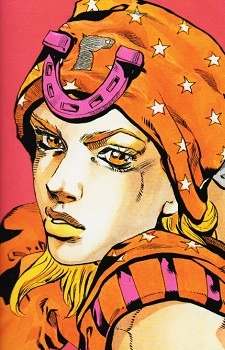

Дата рождения: 1872
Возраст: 19
Раса: Человек
Пол: Мужской
Национальность: Американец

Джонни Джостар
Информация
Описание
Джонни Джостар (ジョニィ・ジョースター Joni Jōsutā?) — главный протагонист Гонки «Стальной Шар». Джонни является седьмым ДжоДжо в манге Невероятные приключения ДжоДжо.
В детстве Джонни был талантливым жокеем, пока однажды у него не оказались парализованы обе ноги. Спустя годы он решает стать участником Гонки «Стальной Шар», чтобы узнать тайну техники Вращения у Джайро Цеппели, надеясь на то, что это поможет ему найти способ снова стоять на ногах. В течение гонки ему удаётся изучить вращение и временно завладев частями Святого Трупа, тем самым став обладателем стенда под названием Tusk.
В детстве Джонни был талантливым жокеем, пока однажды у него не оказались парализованы обе ноги. Спустя годы он решает стать участником Гонки «Стальной Шар», чтобы узнать тайну техники Вращения у Джайро Цеппели, надеясь на то, что это поможет ему найти способ снова стоять на ногах. В течение гонки ему удаётся изучить вращение и временно завладев частями Святого Трупа, тем самым став обладателем стенда под названием Tusk.
Манга